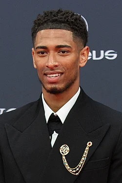

ჯუდ ვიქტორ უილიამ ბელინგჰემი (დაიბადა 2003 წლის 29 ივნისს) არის ინგლისელი პროფესიონალი ფეხბურთელი, რომელიც თამაშობს ნახევარმცველის პოზიციაზე ლა ლიგის კლუბ რეალ მადრიდსა და ინგლისის ეროვნულ ნაკრებში. 2024 წლის ოქროს ბურთისა და FIFA-ს საუკეთესო მამაკაცი მოთამაშის გამოკითხვებში მესამე ადგილი დაიკავა და ფართოდ ითვლება მსოფლიოს ერთ-ერთ საუკეთესო მოთამაშედ.[4][5] ბელინგჰემი ბირმინგემ სიტის შეუერთდა 8 წლამდელთა ასაკში, გახდა კლუბის ყველაზე ახალგაზრდა მოთამაშე პირველ გუნდში, როდესაც დებიუტი შეასრულა უფროს გუნდში 2019 წლის აგვისტოში, 16 წლისა და 38 დღის ასაკში და რეგულარულად თამაშობდა 2019–20 წლების სეზონში. ის შეუერთდა ბორუსია დორტმუნდს 2020 წლის ივლისში და პირველივე მატჩში გახდა მათი ყველაზე ახალგაზრდა გოლის ავტორი. კლუბში გატარებული სამი სეზონის განმავლობაში მან 132 მატჩი ჩაატარა და მოიგო 2020–21 წლების DFB-Pokal; 2022–23 წლების სეზონში მისმა თამაშებმა დორტმუნდს მეორე ადგილის დაკავებაში დაეხმარა და ბუნდესლიგის სეზონის საუკეთესო მოთამაშის ჯილდო მოუტანა. იმავე წელს მან მოიგო 21 წლამდე ასაკის მამაკაცი ფეხბურთელებისთვის განკუთვნილი ორივე მთავარი ჯილდო: „ევროპის ოქროს ბიჭი“ და მსოფლიო კოპას თასი.[6][7] შემდეგ მან 103 მილიონი ევროს სანაცვლოდ „რეალ მადრიდს“ შეუერთდა. პირველ სეზონში ბელინგემი კლუბის საუკეთესო ბომბარდირი იყო, დაეხმარა მათ ლიგის ტიტულისა და ჩემპიონთა ლიგის მოგებაში და ლა ლიგის სეზონის საუკეთესო მოთამაშედ დასახელდა.[8] ის FIFPRO World 11-ში შეიყვანეს 2023, 2024 და 2025 წლებში, ხოლო 2024 წელს „ოქროს ბურთისა“ და FIFA-ს საუკეთესო ჯილდოების რეიტინგში მესამე ადგილი დაიკავა. ბელინგემი ინგლისის ნაკრებში 15, 16, 17 და 21 წლამდელთა ნაკრებებში თამაშობდა. უფროსი გუნდის შემადგენლობაში პირველად 2020 წლის ნოემბერში გამოჩნდა და ქვეყნის ნაკრებში 2020 და 2024 წლების ევროპის ჩემპიონატებზე, ასევე 2022 წლის მსოფლიო ჩემპიონატზე თამაშობდა. ადრეული ცხოვრება და განათლება ჯუდ ვიქტორ უილიამ ბელინგემი[9] დაიბადა 2003 წლის 29 ივნისს[2] სტურბრიჯში, დადლის მეტროპოლიტენის ბოროში, დასავლეთ მიდლენდსში,[10] დენიზისა და მარკ ბელინგემების უფროსი ვაჟი.[11][12] მამის მხრიდან ის ირლანდიური წარმოშობისაა, ხოლო დედის მხრიდან იამაიკური.[13][14] მისი მამა, მარკი, 2022 წლამდე დასავლეთ მიდლენდსის პოლიციის სერჟანტი იყო და არალიგის ფეხბურთში ნაყოფიერი გოლების გამტანი.[15][12][16] ბელინგემის უმცროსი ძმა, ჯობი, ასევე ფეხბურთელია.[17] ბელინგემი კერძო განათლებას იღებდა ბირმინგემის ედგბასტონში, პრაიორის სკოლაში.[18][19] ის გაიზარდა ზინედინ ზიდანის კერპად.[20] ბელინგემმა 2021 წელს დაამთავრა ლაფბოროს კოლეჯი სპორტის BTEC-ის მე-3 დონის სერტიფიკატით.[21] კლუბის კარიერა ბირმინგემ სიტი ბელინგემი ბირმინგემ სიტის შეუერთდა 8 წლამდელთა გუნდში,[10] მას შემდეგ, რაც თამაშობდა „სტურბრიჯ ჯუნიორსში“.[22] ის მათ 18 წლამდელთა გუნდში თამაშობდა 14 წლის ასაკში,[17] და დებიუტი მათ 23 წლამდელთა გუნდში 15 წლის ასაკში შედგა, 2018 წლის 15 ოქტომბერს, „ნოტინგემ ფორესტის“ 23 წლამდელთა გუნდთან გასვლით მატჩში. თამაშში ერთი საათის შემდეგ შესვლისას მან ერთადერთი გოლი გაიტანა 87-ე წუთზე „ბურთის კარის ხაზის გადასატანად შეცურებისას, მას შემდეგ, რაც კაილ მაკფარლეინის მიერ მეკარეზე ზეწოლამ ბურთი მის გზაზე გადაიტანა“.[23] 2019 წლის მარტისთვის მან განვითარების გუნდის ათ მატჩში სამი გოლი გაიტანა,[24] ის შედიოდა FourFourTwo-ს „ინგლისური ფეხბურთის 50 ყველაზე საინტერესო მოზარდის“ სიაში,[25] და მოხსენიებული იყო, როგორც ევროპის მთავარი კლუბების ინტერესის საგანი.[24][26] ის ჯერ კიდევ სკოლის პერიოდშივე თანდათანობით შეეჩვია პირველი გუნდის გარემოს: უფროს გუნდებთან ერთად ვარჯიშობდა, მატჩის დღეს მათ თან ახლდა დაკვირვებისთვის,[17] და მარტში ჩემპიონატის მატჩზე „მე-19 კაცის“ რანგში გაემგზავრა.[24] ბელინგემმა ბირმინგემ სიტის ორწლიანი სტიპენდია აიღო, რომელიც 2019 წლის ივლისში დაიწყო.[27] ის პორტუგალიაში პირველი გუნდის საწვრთნელ ბანაკში მონაწილეობდა,[28] ითამაშა და გაიტანა გოლი სეზონისწინა ამხანაგურ მატჩებში,[29] და 2019–20 წლების სეზონისთვის 22-ე ნომერი მიანიჭეს.[30] 6 აგვისტოს, როდესაც მან EFL თასის პირველი რაუნდის პორტსმუთში ვიზიტი დაიწყო, ბელინგემი ბირმინგემ სიტის ისტორიაში ყველაზე ახალგაზრდა პირველი გუნდის მოთამაშე გახდა. 16 წლისა და 38 დღის ასაკში მან ტრევორ ფრენსისის მიერ 1970 წელს დამყარებული რეკორდი 101 დღით შეამცირა.[10] მან 80 წუთი ითამაშა 3–0 წაგებულ მატჩში და „ბირმინგემ მეილის“ მატჩის საუკეთესო მოთამაშე გახდა.[31] მან პირველი მატჩი საფეხბურთო ლიგაში 19 დღის შემდეგ ჩაატარა, როდესაც მეორე ტაიმში შეცვლაზე შევიდა „სუონსი სიტისთან“ 3-0 წაგებულ მატჩში,[32] ხოლო საშინაო დებიუტი 31 აგვისტოს „სტოკ სიტისთან“ შედგა. ნახევარი საათის შემდეგ ტრავმირებული ჯეფერსონ მონტეროს შეცვლით, „ბელინგჰემმა“ გამარჯვების გოლი გაიტანა - თუმცა დიდი მოგერიებით - და „ბირმინგემმა“ „სტოკს“ 1-0-დან 2-1 მოუგო. ამგვარად, ის მათი ყველაზე ახალგაზრდა გოლის ავტორი გახდა 16 წლისა და 63 დღის ასაკში.[33] მან შემდეგი მატჩი, „ჩარლტონ ატლეტიკთან“ სტუმრად ორი კვირის შემდეგ, სასტარტო შემადგენლობაში ჩაატარა და ერთადერთი გოლი გაიტანა კერიმ მრაბტის მიერ დაჭერილი ბურთის შემდეგ.[34]
